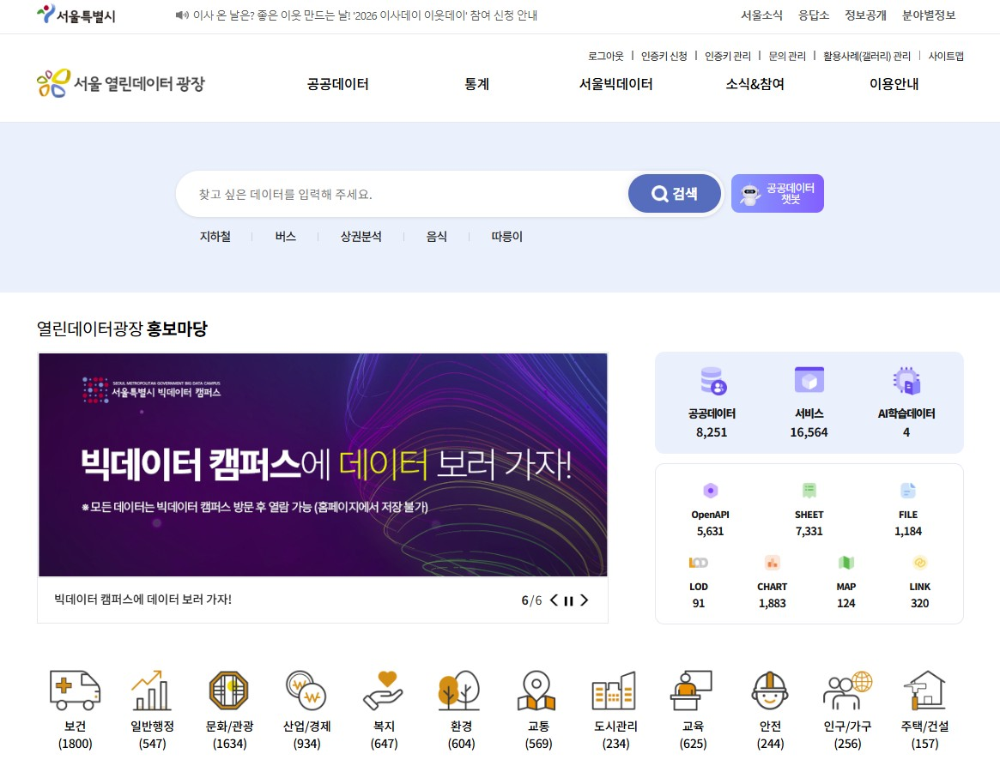
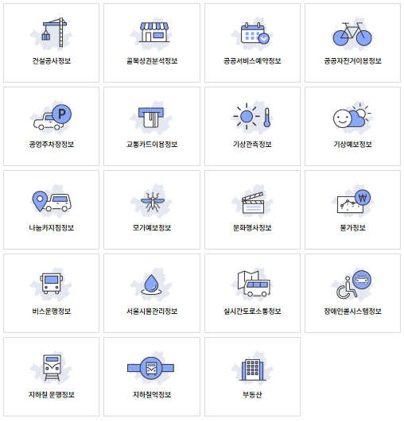
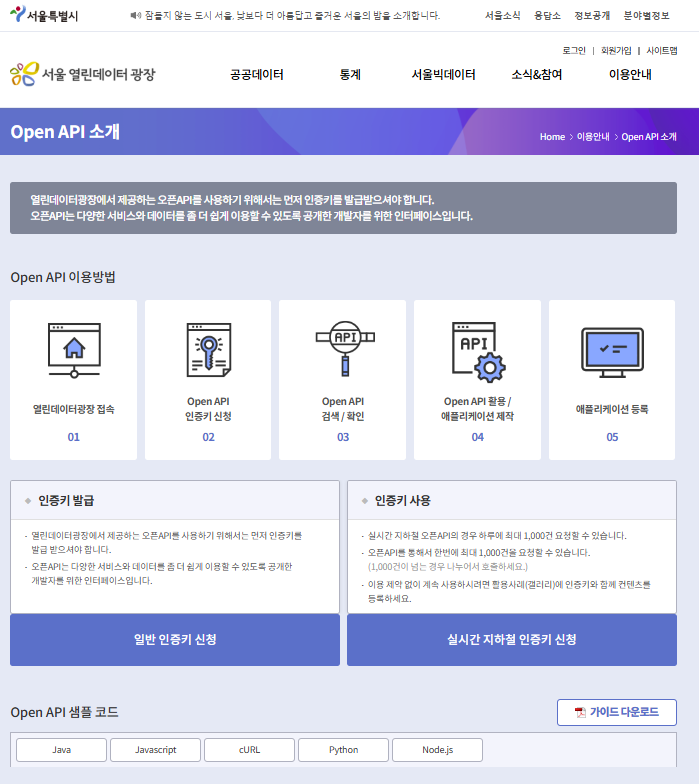

AI 챔피언 고급과정 2기 · 개인과제 2회차
Seoul
OpenData
MCP
Model Context Protocol Server
데이터 이름을 몰라도,
만들고 싶은 것만 말하면 됩니다.
The Plaza · data.seoul.go.kr
서울시가 직접 운영하는 공공데이터 창구
출처 — 서울시 「열린데이터광장
공공데이터 현황」 2026. 7. 31. 기준

assets/1.jpg| 자치구 및 자치구산하 | 4,209 |
| 서울시 본청 · 사업소 | 3,525 |
| 투자출연기관 | 364 |
| 공공기관(외부) | 159 |
| 민간(기업) | 2 |
자치구 데이터가 본청보다 많다. 25개 자치구가 각자 등록하기 때문이며, 기관 단위로 범위를 좁히는 기능이 필요한 구조적 이유다.
타 지자체 — 부산 12,411 · 인천 4,379 | 해외 — 뉴욕 3,014 · 런던 1,301
Domains
12개 정책분야에 시민 생활 전 영역이 담겨 있습니다
막대는 분야별 보유 건수 비율
홈페이지 표기 기준 (8,255건 시점)
보유량 1~3위는 보건 · 문화/관광 · 산업경제. 그런데 뒤에서 보듯 실제 이용은 전혀 다른 분야에 쏠려 있다. 본 MCP는 이 분야 정보를 카탈로그 MAP_CATE_NM 필드에서 그대로 읽어 분류하며, 근거가 없으면 미분류로 남긴다.
Flagship Data
서울시만 가진 고유 데이터가 있습니다
주민등록인구가 아니라
그 시각 그 자리에 실제로 있는 사람

assets/2.png주민등록인구가 아니라 “그 시각 그 자리에 실제로 있는 사람”을 추계한 데이터다. 상권 분석, 재난 대응, 시설 배치의 기준이 된다.
수도권 생활이동은 출근·등교·귀가·쇼핑 등 7개 목적별 이동을 담는다. 서울시가 통신·카드사와 결합해 만든, 다른 곳에서는 구할 수 없는 데이터다.
이런 데이터가 있다는 사실 자체를 모르는 것이 가장 큰 손실이다.
Problem
쓸 수 있는 데이터가 있어도,
찾지 못하면 없는 것과 같습니다
“서울시 공공데이터 8,266건 중 필요한 데이터를 찾으려면 사용자가 정확한 서비스명을 이미 알고 있어야 하고, API·파일 형식 혼재와 담당부서 확인의 번거로움이 데이터 활용의 진입장벽이 된다.”
출발점이 없다
만들고 싶은 서비스는 머릿속에 있는데, 검색창에 넣을 단어를 모른다. 키워드 매칭 검색은 여기서 작동하지 않는다.
형식을 알 수 없다
OpenAPI는 전체 서비스 16,577개 중 34%뿐. 검색 결과마다 API인지 파일인지 눈으로 골라내야 한다.
살아있는지 모른다
매년 수십~수백 건이 종료된다. 목록에 있다고 지금도 쓸 수 있는 데이터가 아니다.
Demand
이미 313억 건이 쓰였습니다. 다만 쏠려 있습니다
페이지뷰 + 다운로드 + 서비스 호출
단위 : 억건 · 2026. 7. 31. 기준
교통 한 분야가 전체 이용의 68.9%. 교통+환경이 95.2%다. 보유량 1위인 보건 1,800건의 이용은 0.65억건에 그친다. 공급은 8,266건인데 수요는 극소수에 쏠려 있다 — 없어서가 아니라 못 찾아서에 가깝다.
Churn
카탈로그는 고정된 목록이 아닙니다
종료 사유 — CCTV 보안이슈, 정보시스템 폐기,
업무 종료, 비공개 전환 등
| 개방 | 525 |
| 종료 | 110 |
| 순증 | +415 |
| 개방 | 373 |
| 종료 | 64 |
| 순증 | +309 |
| 개방 | 277 |
| 종료 | 173 |
| 순증 | +104 |
| 개방 | 174 |
| 종료 | 121 |
| 순증 | +53 |
| 2023 | 7,800 |
| 2024 | 8,109 |
| 2025 | 8,213 |
| 2026. 7. 31. | 8,266 |
그래서 “최근 갱신순 조회”가 부가 기능이 아니라 필수 기능이다. 오래된 문서·블로그의 API 안내는 이미 종료된 것일 수 있다. 참고자료는 8,266건(2026.7.31), 홈페이지 실시간 표기는 8,255건 — 두 수치가 다른 것 자체가 카탈로그가 계속 움직인다는 증거다.
Friction
검색은 되는데, 판단이 안 됩니다
정확한 서비스명을 알아야 검색된다
키워드 매칭 방식이라, 데이터명을 모르면 출발점 자체가 없다.
파일과 API가 한 목록에 섞인다
OpenAPI는 전체 서비스의 34%뿐 — 결과마다 형식을 눈으로 골라내야 한다.
살아있는 데이터인지 알기 어렵다
매년 수십~수백 건이 종료되지만, 목록만으로는 구분되지 않는다.
형식·담당부서 확인에 추가 이동이 필요하다
데이터셋마다 상세페이지에 들어가야 API 여부와 담당부서 연락처를 알 수 있다. 후보가 10개면 10번 들어가야 한다.
외부 포털 색인만 믿으면 누락된다
실제로 존재하는 API를 “없다”고 판단하게 된다. 다음 장이 이 프로젝트를 만들게 한 실제 사례다.
Origin
데이터 소스를 전면 교체하게 만든 한 번의 오답
“서울 생활인구
250m 격자
API 있어?”
공공데이터포털(data.go.kr) 색인 기반으로는 명확한 답을 주지 못했다. → 색인 누락
SearchCatalogService 직접 호출SRV_TYPE 필드로 제공 형식이 명확히 기록돼 있음을 확인. 서울시 도구는 서울시 카탈로그를 원천으로 삼는다Shift
검색어를 짜내는 일에서, 한 문장을 말하는 일로
Architecture
별도 서버 없이, AI 도구에 직접 꽂히는 구조
// AI 어시스턴트 (Claude · Cursor) │ │ MCP (stdio) ▼ seoul-opendata-mcp — 사용자 PC에서 실행 ├─ recommend_seoul_apis_for_idea ├─ search_seoul_datasets ├─ list_seoul_recent_updates ├─ get_seoul_dataset_detail └─ refine_seoul_recommendations │ │ HTTP GET ▼ openapi.seoul.go.kr:8088 /{키}/json/SearchCatalogService /{시작}/{종료}/{ID}/{서비스명}/{기관명}/
사용자 PC에서 stdio로 직접 실행
중앙 서버를 운영하지 않는다. 설치자가 각자 자기 인증키로 자기 PC에서 호출하므로 운영 비용이 들지 않고, 한 사람의 호출량이 다른 사용자에게 영향을 주지 않는다.
스크래핑 없이 공식 카탈로그 API만 사용
HTML 파싱이 아니라 SearchCatalogService 응답 필드를 그대로 읽는다.
캐시 + 지수 백오프 재시도
실시간 1분 · 검색/추천 5분 · 상세 30분 TTL. 5xx·네트워크 오류만 최대 3회 재시도.
Tools
AI가 상황에 맞게 골라 쓰는 5개 도구
사용자는 도구 이름을 알 필요가 없다
질문 문장에 따라 AI가 자동 선택
recommend_seoul_
apis_for_idea
아이디어 → 추천
키워드 추출 · 동의어 확장 · 카탈로그 병렬 검색 · 점수화까지 한 번에. 이 도구 하나로 대부분의 질문이 해결된다.
search_seoul_
datasets
키워드 직접 검색
조건에 맞는 전체 건수(totalMatchCount)를 함께 반환해, 지금 보고 있는 것이 전부인지 표본인지 알 수 있다.
list_seoul_
recent_updates
최근 갱신순 조회 고유 기능
매년 수백 건이 종료되는 카탈로그에서 “살아있는 API”를 먼저 고른다. 앞서 본 개방·종료 현황이 이 기능의 근거다.
get_seoul_
dataset_detail
단건 상세 조회
제공기관 · 담당부서 · 연락처 · 갱신주기 · 최종갱신일 · SRV_TYPE을 서비스 ID 하나로 조회한다.
refine_seoul_
recommendations
이전 결과 재필터링
외부 API를 다시 호출하지 않고 직전 결과를 좁혀 본다 — 호출·토큰 비용 절감.
Ranking
“왜 이게 1등인지”를 사람이 읽을 수 있게 돌려줍니다
배점 근거를 문장으로 함께 반환
보고서에 그대로 인용 가능
| 데이터명 · 키워드 · 동의어 일치 | 40 |
| 정책분야(BRM) 일치 | 15 |
| 지역조건 일치 | 10 |
| 실시간성 요구 일치 | 10 |
| 제공기관 조건 일치 | 5 |
| 제공형식(OpenAPI/File/Sheet) 존재 | 15 |
| 최신성 · 갱신주기 | 10 · 10 |
| 제공기관 · 담당부서 존재 | 10 |
| 메타정보 충실도 | 10 |
| 문의처 · 공식 상세페이지 | 5 · 5 |
근거가 없으면 추측하지 않는다. 정책분야는 카탈로그 MAP_CATE_NM 필드가 12개 분야와 전 건 1:1로 일치함을 전수 확인해 매핑하고, 매칭되지 않으면 null(미분류)로 남긴다. 공식 BRM 코드는 응답에 없으므로 임의 생성하지 않는다.
실제 상태점검을 하지 않은 API 가용성·갱신주기 준수 여부는 점수에 넣지 않는다. 확인할 수 없는 것을 점수로 만들지 않는다는 원칙이다.
반환 필드 — scoreBreakdown · relevanceReasons · qualityReasons · brm · organization
Measured
체감이 아니라 실측으로
로컬 환경 · 2026-08-12
SearchCatalogService 실API 호출 기준
5회 평균
키워드 5개 병렬 검색
외부 API 재호출 없음
push마다 CI 자동 검증
| 실시간성 키워드 질의 | 1분 |
| 일반 검색 · 추천 | 5분 |
| 상세 조회 | 30분 |
| 재시도 (5xx · 네트워크) | 최대 3회 |
오픈API는 한 번에 최대 1,000건까지 요청 가능. 실시간 지하철 API는 하루 1,000건.
초과 요청은 자동 클램핑하고, 전체 건수가 상한을 넘으면 “표본 내 정렬”이라는 한계를 응답의 note에 명시한다.
For Citizens
교통·환경에 쏠린 활용을, 나머지 8,000건으로 넓히는 일
등하굣길 안전 지도
안전비상벨 설치위치, 자치구 CCTV·방범 데이터를 지도에 얹어 통학로를 점검한다.
버스·따릉이 통합 도우미
정류장 도착 버스와 근처 따릉이 잔여 대수를 한 화면에서. 실시간 데이터 우선 조회.
우리 동네 창업 입지 분석
생활인구(250m 격자)와 상권분석 데이터를 겹쳐 유동인구 대비 상권을 비교한다.
자치구 인허가 대시보드
자치구별 숙박업·위생업소 인허가 시리즈를 모아 비교. 자치구 데이터 4,209건이 대상.
잠자는 보건 데이터 1,800건
보유량 1위지만 이용은 0.65억건. 의료기관·검진·감염병 데이터를 생활 서비스로 끌어낸다.
살아있는 API만 골라 프로토타입
최근 갱신순 조회로 운영이 활발한 API부터 붙여, 종료된 데이터에 시간을 쓰지 않는다.
Install
인증키 발급 후, 설치는 세 단계
등록 후 새 대화창에 5개 도구가
보이면 연동 성공
pnpm install
pnpm build
cp .env.example .env
# SEOUL_OPEN_DATA_API_KEY 입력claude mcp add \ seoul-opendata-mcp -s user \ -e SEOUL_OPEN_DATA_API_KEY="발급키" \ -- node "/절대경로/dist/server.js"

assets/3.pngLive Demo
설치부터 질의까지, 실제 화면
① 인증키 → ② pnpm build → ③ claude mcp add
→ ④ 질의 → ⑤ 점수·근거·담당부서 확인
영상 파일을 assets/demo.mp4 로 저장하면 이 자리에 자동으로 재생 화면이 들어갑니다.
예시 질의 — “생활인구 250m 격자 데이터로 유동인구를 분석하는 앱을 만들고 싶어. 관련 API 추천해줘.”
Seoul OpenData MCP
공급은 8,266건,
활용은 몇 건에 쏠려 있습니다
그 격차의 상당 부분은 “없어서”가 아니라 “못 찾아서”다. 찾는 일의 비용을 낮추는 것이 이 도구의 목적이다.
원천 직결
서울시 공식 카탈로그 API만을 근거로 판별
추측 없음
근거가 없으면 미분류로 남긴다
근거 제시
추천 이유를 문장으로 함께 반환
즉시 사용
설치 3단계 · 등록 한 줄
github.com/youjin8812-hub/seoul-opendata-mcp · MIT · 강유진